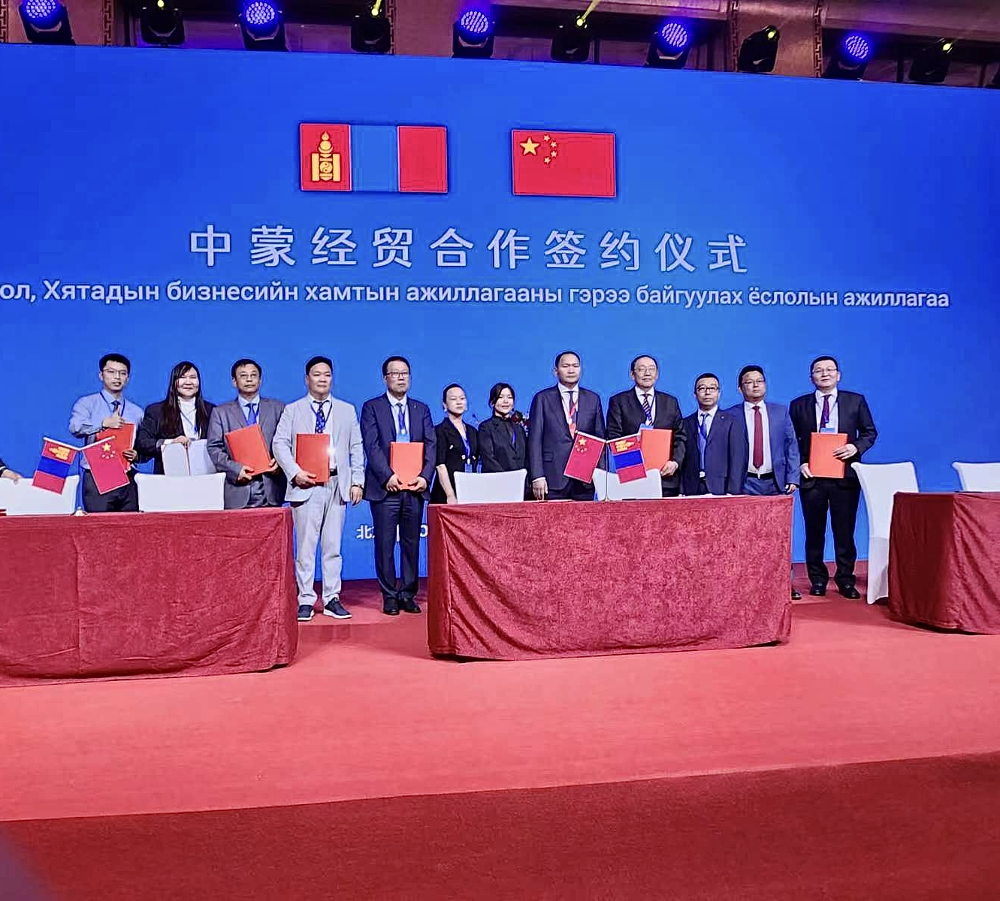
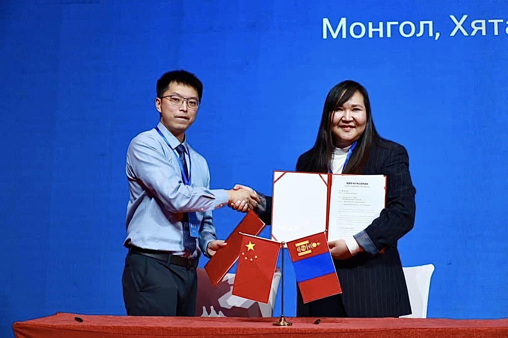

我国首台！武汉自主研发临床全数字PET销售海外
近日，位于武汉的数字PET产业化单位锐世医疗与蒙古国第四医院正式签约，实现了临床全数字PET医疗设备的首台海外销售。
全数字PET，是2004年，中国科学家谢庆国教授在华中科技大学提出了多电压阈值采样法MVT方法，攻克了PET高速脉冲数字化世界难题，实现了全数字PET从技术路径、关键材料、核心元器件到系统整机的全部自主研发，也开辟和引领了全数字PET这一医学影像新方向。2022年，团队凭借源头创新的MVT方法，还获得了世界知识产权组织全球奖。
不仅如此，在前不久召开的中国－蒙古经贸合作论坛上，锐世医疗作为医疗器械领域唯一中国企业代表，与蒙古卫生医疗代表团达成深度合作协议，将基于蒙古第四医院即将装机的全数字PET，升级打造建设中亚分子影像中心，进一步推动全数字PET在蒙古乃至中亚五国的应用，助力当地医疗发展。
蒙古国第四医院院长佐尔加加尔表示，随着中蒙合作的日益紧密，蒙古国也抓住机遇提升国内医疗水平，作为临床应用方，能将中国的创新技术引入到蒙古国，这对健康蒙古意义重大。
据了解，蒙古国全国300万人口的80%都集中在首都乌兰巴托。佐尔加加尔介绍说，应用高性能的PET装备，一方面能解决蒙古国重大疾病的早期诊断问题，另外更可以利用数字PET的独特的精准定量和数据优势，快速的集中获取蒙古国人群疾病大数据、了解区域性的疾病发生发展规律，能为蒙古国的健康卫生事业提供基础数据、为蒙古国的医疗政策提供决策依据，造福蒙古人民健康。
锐世医疗总经理张博介绍，从2017年起，动物全数字PET科学仪器已相继在芬兰的国家PET中心、意大利的地中海神经研究所等全球顶尖的医疗机构和科研院所实现装机应用。从实现海外科研应用到临床应用，数字PET作为国内原创高端医疗产业代表，与蒙古国医疗卫生机构实现合作，参与到中蒙高级别会议，充分展现了企业的国际发展潜力，体现了国产原创高端医疗器械向“一带一路”国家推广的良好趋势。
目前，临床全数字PET，从首台正式落地 湖北鄂州到如今，已稳定运行三年，而其研发还在不断深入，团队相继研发成功全球首个标准CMOS硅光电倍增器，以及基于MVT方法的ASIC探测器芯片，并致力于带动相关产业链，包括稀土闪烁晶体材料、新型光电器件、智能化软件等发展，未来还将开创一个全新的健康产业市场。


经济日报新闻客户端
责编：李思隐 祝伟